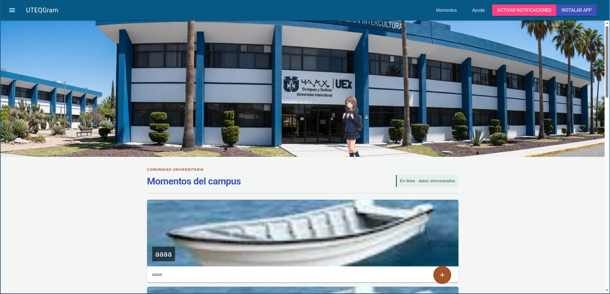
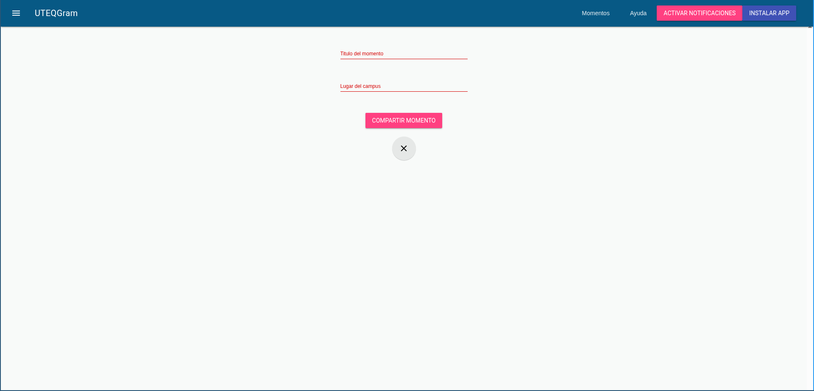
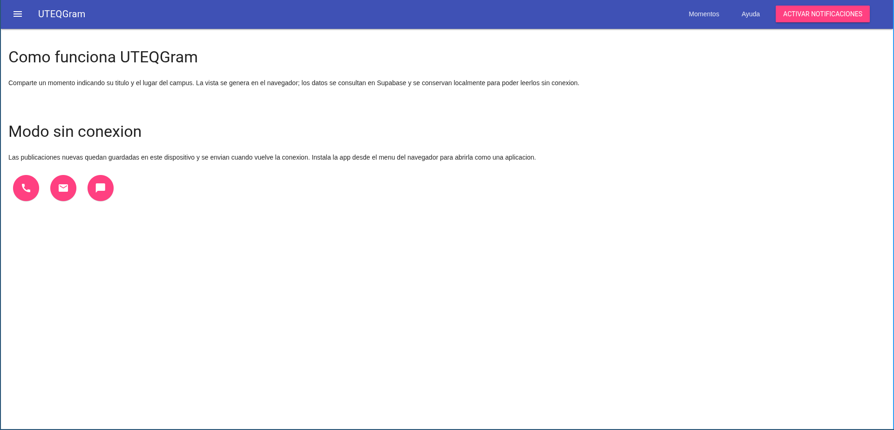
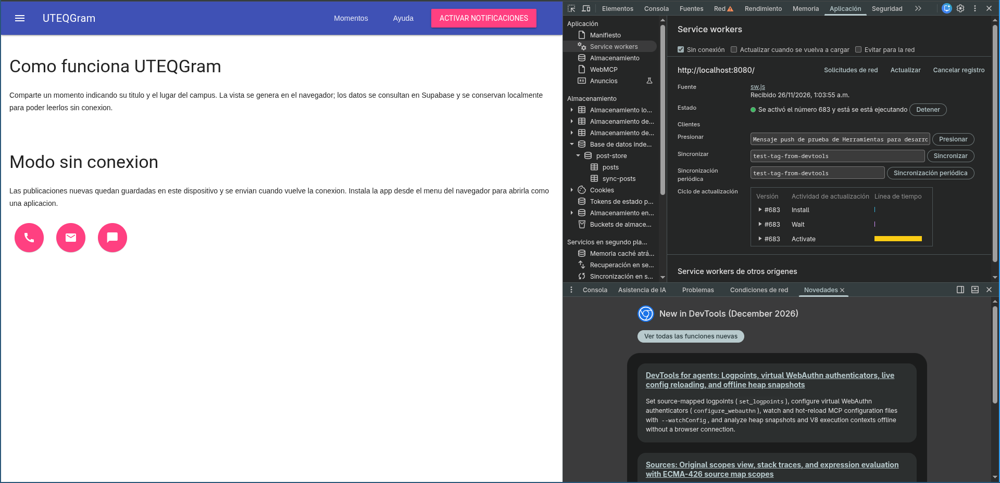
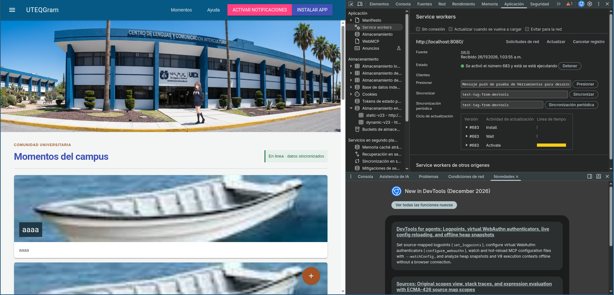
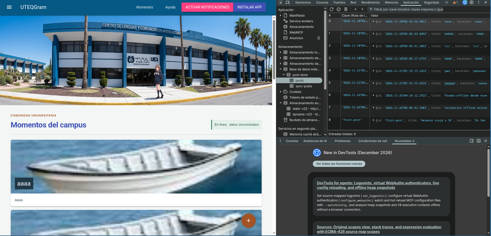

Informe técnico de plataformas, configuración, vistas, datos y validación.
Nombre: Bruno Lopez de la Cruz
Institución: UTEQ
Profesor: José Alberto Delgadillo Gutierrez
Fecha: 26 de noviembre de 2026 · Entorno: Linux, Node.js, npm y Chrome
UTEQGram permite a integrantes de la comunidad universitaria compartir momentos breves del campus mediante un título y una ubicación. La aplicación consulta publicaciones compartidas, conserva una copia local y permite seguir consultando y creando publicaciones cuando no hay conexión.
La interfaz se genera del lado del cliente con HTML, CSS y JavaScript. No hay renderizado de vistas en el servidor: Supabase entrega datos JSON y el navegador construye las tarjetas del feed.
| Herramienta | Uso y justificación |
|---|---|
| HTML, CSS y JavaScript | Interfaz adaptable, feed, formulario y navegación. Adecuados para una app ligera y estática sin compilación. |
| Material Design Lite 1.3 | Componentes de navegación, botones, campos y snackbar. Se conserva la base existente y se complementa con estilos propios para el contexto universitario. |
| Service Worker y Cache API | Precarga el shell, atiende rutas y recursos desde caché y ofrece fallback offline. Permite volver a abrir la app tras la primera visita. |
| IndexedDB | Almacena publicaciones y pendientes de sincronización de forma persistente en el navegador; habilita lectura y creación offline. |
| Supabase REST/PostgREST | Fuente remota compartida para las publicaciones, sin implementar un backend propio en este prototipo. |
| Background Sync | Solicita el envío diferido de pendientes en navegadores compatibles. Es una mejora progresiva: la persistencia local no depende de esta API. |
| Node.js, npm y http-server | Servidor local y pruebas. Sirve public/ por HTTP, requisito para las APIs de PWA. |
| Vercel | Publicación estática asociada al repositorio y configurada en vercel.json. |
public/index.html, idioma español, viewport adaptable y metadatos de instalación.public/manifest.json: start_url: /, scope: /, display: standalone, color de tema #075985, fondo #f3f6f5, iconos PNG de 192 y 512 px.public/sw.js, registrado en /sw.js con alcance raíz.static-v23 y dynamic-v23. La caché estática incluye home, ayuda, fallback, scripts, estilos, imágenes e iconos. Se incrementa la versión al cambiar el shell.post-store, versión 2; almacenes posts y sync-posts, clave id.post, lectura ?select=* y escritura JSON con Prefer: return=representation.id, title, location e image. Las publicaciones nuevas usan /src/images/main-image.jpg.service_role en el cliente.npm install. Ejecutar: npm start. Pruebas: npm test.static-v23, igual a la copia entregada.public/index.html. Feed combina registros locales y remotos; el indicador distingue conexión y modo local.public/help/index.html, página estática cacheada con explicación del uso y modo offline.public/offline.html, respuesta cacheada cuando no se recupera una página HTML.Las vistas se producen en el cliente. Supabase actúa como API de datos y no como motor de renderizado de páginas.



Fecha de ejecución: 26 de noviembre de 2026, entorno local Linux con Node.js/npm y Chrome. Las pruebas y capturas corresponden al entorno local (localhost:8080).
| Prueba | Resultado | Evidencia |
|---|---|---|
| JSON del manifiesto e iconos | Aprobada | Manifiesto parseado; iconos de 192 y 512 px presentes. |
| Recursos del shell precacheado | Aprobada | Todos los recursos locales de STATIC_FILES existen. |
| Sintaxis de app, feed y service worker | Aprobada | node --check sin errores. |
| Persistencia offline sin Background Sync | Aprobada | Prueba verifica escrituras en posts y sync-posts y que Background Sync es opcional. |
| Suite automatizada | 4 aprobadas, 0 fallidas | npm test con Node test runner. |
| Renderizado y feed local | Aprobada | Comprobación de home, imagen local y publicaciones remotas en navegador. |
| Flujo offline→online | Aprobada | Se creó una publicación con la red desactivada, se verificó el guardado local, se reconectó, se encontró en Supabase con HTTP 200 y se confirmó que la cola sync-posts quedó vacía. La fila de prueba se eliminó después. |
| URL de Vercel | Aprobada | El alias responde HTTP 200 y su service worker es static-v23, igual a la copia entregada. |


static-v23 y dynamic-v23.
post-store, posts y sync-posts.Versión editable del informe: docs/caso-estudio-pwa.md